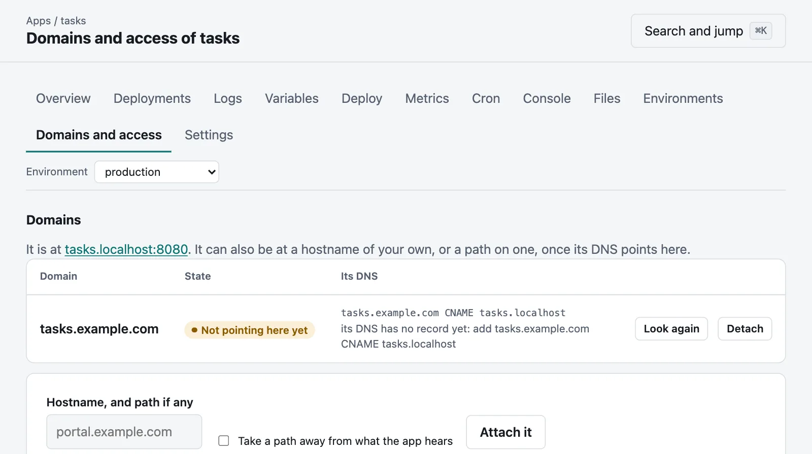
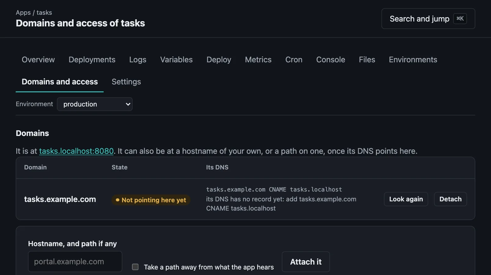

Your own domains, and paths
Hostnames of your own, several apps on one hostname, and servers with no wildcard DNS.
An environment is at its own hostname under the server's domain, such as shop.apps.example.com. It can also be at a hostname of your own, or a path on one, so that several apps can share a hostname.


moor domains add portal.example.com --app shopmoor domains add tools.example.com/reports --app reportsDNS#
A domain serves nothing until its DNS is seen to point here, by either of:
- a CNAME to the environment's own hostname, which
moor domainsand the app's Domains and access tab show you, or - an A or AAAA record with an address of this server.
Moorage looks when it is attached, then every few minutes, or when you ask:
moor domains verify portal.example.commoor domainsmoor domains remove portal.example.comA domain goes with one environment, and takes --env like everything else. Attaching one takes a maintainer. A hostname under the server's own domain is not needed: it names its apps by itself.
Certificates#
The CA that Moorage makes for itself vouches only for the server's own domain, so that HTTPS at another hostname needs one of these:
[tls] mode = "files"with a certificate for that hostname, or- a proxy in front that has one.
A path on a hostname#
Requests under the path go to the environment, and the longest path that fits wins. What an app must know of it:
- It hears the path as it was asked for, and
X-Forwarded-Prefixsays what the path is. Most frameworks have a "root path" or "base" setting for this.--strip-prefixtakes it away instead. - Its redirects and cookies are made to fit. A
Location: /loginbecomes/reports/login, and a cookie's path goes under/reports/. - What is in what it sends is its own affair. Links in its pages are not rewritten: that goes wrong in ways nobody can see. Relative links always work; others need to take the path into account.
- Static sites work as long as their links are relative.
/.moorage/ under the path belongs to Moorage. Prefer a hostname of its own for an app, if you can have one: it is the only way it can be sure of having cookies and storage to itself.
With no wildcard DNS: path routing#
If you cannot have a wildcard DNS record, a whole server can give every app a path on one hostname, and /shop/, /docs/ and /shop--staging/ take the place of hostnames:
moor server init --routing path --domain apps.example.com --console-host moorage.example.comThat needs two DNS records, and no wildcard. The console must have a hostname of its own, and the server refuses to start without one: a page of any app on the console's own hostname could act as whoever is signed in.
- Each app hears its path, in
$MOORAGE_BASE_PATHandX-Forwarded-Prefix, and$MOORAGE_URLsays all of its address.strip_prefix = truein[app]takes it away from what it hears. - Apps share one origin. A script in one page can read what another app's pages can, and cookies and browser storage are not kept apart. Use it where apps trust one another. Otherwise use hostnames: that is why they are the default.